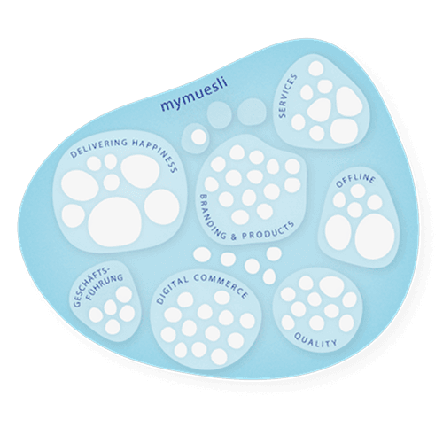

Solo
1 Zugang
299€
pro Jahr
zzgl. MwSt
Jährliche Abrechnung, jederzeit kündbar
Die Unternehmen der Zukunft sind selbstorganisiert. Wir haben 9 Spaces gestartet, um Teams auf ihrer Reise weg von Top-Down-Planung und hin zu mehr Eigenverantwortung zu begleiten.

Auf dieser Seite lernst du, wie ihr im Team Selbstorganisation wirksam umsetzt.
Die Unternehmen der Zukunft sind selbstorganisiert. Spätestens seit Frédéric Laloux’ Buch Reinventing Organizations ist für viele Menschen klar, dass so die Zukunft der Arbeit aussieht:
Selbstorganisation heißt nicht weniger Organisation, sondern mehr Organisation. Teams, die den Grad an Selbstorganisation aufdrehen, müssen Profis darin sein, Prozesse zu bauen, Regeln zu schaffen und abzuschaffen, Transparenz herzustellen. 9 Spaces ist euer organisationaler Werkzeugkoffer für die Entwicklung hin zu mehr Selbstorganisation, wobei euch unsere Tools Schritt für Schritt dabei begleiten:

Impact erhöhen, Strukturen verbessern und einfach gut zusammen arbeiten. Mit unseren Workshops und Methoden hast du alles, um dein Team oder deine Organisationen zu transformieren.

Unser KI-Facilitator findet für dich den passenden Workshop, der genau zu deinen Herausforderungen passt.
Wie weit seid ihr auf eurem Weg hin zu einem selbstorganisierten Team? Unten findest du Aussagen, die dir dabei helfen, diese Frage zu beantworten. Beantworte sie jeweils mit einer Prozentzahl von 0% bis 100%.
✅ Unsere Organisation hat einen klar formulierten Purpose. Alle Menschen in der Organisation kennen ihn.
✅ Jede*r im Team kennt die eigenen Stärken und die Stärken der anderen Organisations-Mitglieder.
✅ Jede*r im Team kann mit seiner*ihrer ganzen Persönlichkeit zur Arbeit kommen.
✅ Alle Menschen im Team haben klare Rollen und Verantwortlichkeiten, die kontinuierlich weiterentwickelt werden.
✅ Führungsrollen liegen nicht bei einer Person, sondern sind sinnvoll auf mehrere Menschen verteilt.
✅ Alle im Team richten ihre Arbeit an der aktuellen Strategie aus.
✅ Wir arbeiten kontinuierlich an unseren zwischenmenschlichen Beziehungen im Team.
✅ Alle in der Organisation kriegen regelmäßig sowohl positiv-bestärkendes als auch
konstruktiv-kritisches Feedback für ihre Arbeit.
✅ Alle im Team haben ein funktionierendes Selbstmanagement-System, mit dem sie die eigene Arbeit organisieren.
✅ Unsere Meetings geben uns Klarheit und Energie.
✅ Wir haben ein klar definiertes Set an Werten, das alle kennen und das von allen gelebt wird.
✅ Die Menschen in der Organisation fühlen sich verantwortlich für das, was die Organisation tut.
Den ganzen Selbstorganisations-Check findest du hier:
zzgl. MwSt
Jährliche Abrechnung, jederzeit kündbar
Zugang für mehrere Mitarbeitende in einem maßgeschneiderten Plan
Alle Features und Mehrwerte auf einem Blick?

Wie hat sich mymuesli ein Selbstorganisations-System gebaut, das zur eigenen Organisation passt? Eine Case Study.